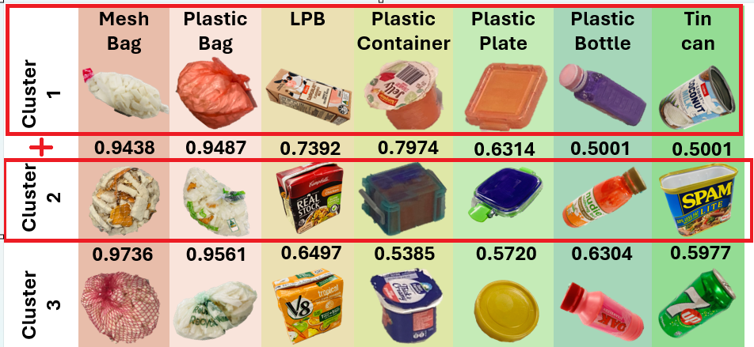

Experimental Protocol
The GRAB benchmark evaluates robotic grasping performance across four progressively challenging experimental conditions, ranging from isolated objects to heavily cluttered mixed food waste environments. The protocol incorporates three grasping modalities: rigid parallel-jaw, Fin-Ray soft adaptive, and suction grippers, enabling systematic comparison of grasping performance under varying object and environmental conditions.
The experimental methodology establishes a controlled progression in scene complexity, incorporating isolated object grasping, randomized inorganic clutter, increased object density, and mixed organic–inorganic food waste conditions. Each experimental level defines the object composition, scene generation procedure, grasp execution process, and evaluation conditions.
Experimental Methodology Overview
Four experimental levels were designed to progressively increase the complexity of robotic grasping in cluttered environments.
Single Isolated Object
Individual object grasping under minimal environmental interference.
Medium-Clutter Scene
Randomized clutter generated from predefined inorganic object clusters.
Heavy-Clutter Scene
Increased object density through pairwise combinations of inorganic clusters.
Mixed Food Waste Scene
Heterogeneous clutter incorporating organic materials and moisture-related environmental disturbances.
1. Experimental Setup

The experimental platform comprises a UR10 robotic manipulator and an Intel RealSense D415 RGB-D camera operating within a 40 × 40 cm² workspace. The camera is positioned approximately 52.5 cm above the workspace, with its viewing direction perpendicular to the experimental surface. The workspace dimensions and camera configuration were selected to correspond to the workspace mask used by the 6D grasp pose estimation models. This establishes a consistent perception and manipulation region across the experimental conditions.
1.1. Grasping Modalities
Three grasping modalities were evaluated: a rigid parallel-jaw gripper, a Fin-Ray soft adaptive gripper, and a suction gripper. These modalities represent different mechanical interaction principles and provide a basis for comparing grasping performance across objects with varying geometric and deformation characteristics.
1.2. Grasp Pose Estimation and Selection
Candidate grasp poses were generated using AnyGrasp for parallel-jaw grasping and SuctionNet for suction-based grasping. Following post-processing, the highest-ranked feasible grasp was selected from the top eight candidate poses. The same grasp-selection methodology was maintained across the cluttered experimental conditions to support comparative evaluation of the three grasping modalities.
1.3. Experimental Design
Four progressively challenging experimental conditions were established. The first level evaluates individual objects in isolation, while Levels 2 and 3 introduce randomized inorganic clutter at increasing object densities. Level 4 extends the evaluation to mixed organic–inorganic food waste, incorporating moisture-related environmental disturbances.
2. Level 1: Single Isolated Object
Level 1 establishes the baseline grasping performance of each modality under minimal environmental interference. The experiment includes 21 objects across seven inorganic contaminant categories, with three representative objects per category, as illustrated in Figure 2. Each object was evaluated at five predefined workspace positions: the four corners and the centre. These positions were selected to examine grasping performance across different locations within the camera's field of view and the robot's accessible workspace. Each of the 21 objects was tested at all five positions using the three grasping modalities. This resulted in 105 grasp attempts per gripper and 315 trials overall. Initial experiments indicated that suction grasping was unsuccessful for plastic bags and mesh bags, primarily due to difficulties establishing and maintaining a reliable suction seal. Consequently, these two categories were excluded from subsequent suction-based clutter experiments.
3. Level 2: Medium-Clutter Scene
Level 2 evaluates robotic grasping performance under moderate clutter by introducing multiple inorganic objects simultaneously into the experimental workspace.
3.1. Object Cluster Formation
The 21-object dataset was divided into three clusters of seven objects, each containing one representative from every inorganic contaminant category. The object sets are illustrated in Figure 2. For suction-based experiments, plastic bags and mesh bags were excluded in accordance with the Level 1 observations, resulting in five objects per cluster.
3.2. Randomized Scene Generation
Objects belonging to each cluster were randomly dropped into the experimental workspace from a storage box to generate varied spatial arrangements. This procedure introduced differences in object positions, orientations, contact conditions, and partial occlusions between trials.
3.3. Grasp Execution
During each grasping cycle, candidate grasp poses were generated using AnyGrasp or SuctionNet, depending on the grasping modality. Following post-processing, the highest-ranked feasible candidate was selected from the top eight grasp poses. Consecutive 7 grasping attempts were performed on the objects within each cluster. Each cluster configuration was evaluated over five repetitions.
3.4. Trial Allocation
The experimental procedure resulted in 105 trials for each parallel-jaw gripper and 75 trials for the suction gripper, giving 285 trials in total.
4. Level 3: Heavy-Clutter Scene

Level 3 investigates grasping performance under heavy clutter by increasing the number of inorganic objects within the experimental workspace. Each scene contained 14 inorganic objects, representing the maximum practical object density under the workspace dimensions and camera depth constraints.
4.1. Heavy-Clutter Configuration
The three clusters established in Level 2 were combined in pairs to generate three heavy-clutter configurations: Cluster 1 + Cluster 2, Cluster 1 + Cluster 3, and Cluster 2 + Cluster 3. Each configuration comprised two representative objects from each inorganic contaminant category, resulting in 14 objects per scene. For suction-based experiments, plastic bags and mesh bags were excluded, reducing the scene composition to 10 inorganic objects.
4.2. Randomized Scene Generation
Objects were randomly dropped into the workspace to establish varied clutter arrangements. The increased object density introduced additional occlusions, contact interactions, and restrictions on feasible grasp approach directions.
4.3. Grasp Execution and Repetition
The grasp-selection and execution procedures established in Level 2 were retained. Each heavy-clutter configuration was evaluated over five repetitions. This resulted in 210 trials for each parallel-jaw gripper and 150 trials for the suction gripper, producing 570 trials overall.
5. Level 4: Mixed Food Waste Scene
Level 4 evaluates robotic grasping performance under heterogeneous food waste conditions by introducing organic materials and moisture-related environmental disturbances. Each scene comprised seven inorganic contaminants and seven organic food waste items, resulting in a mixed 14-object configuration. Compared with the preceding clutter levels, this experimental condition introduced additional challenges associated with object occlusion, surface moisture, adhesion, irregular geometries, and contact interactions between organic and inorganic materials.
5.1. Organic Material Selection
Seven commonly encountered fruits and vegetables were selected as representative organic food waste materials: Packham pear, carrot, apple, orange, cucumber, capsicum, and green Nashi pear. These materials were selected to introduce variation in geometric characteristics, surface texture, firmness, and moisture-related properties. The resulting organic material set represented a heterogeneous mixture of food waste components.
5.2. Organic Sample Preparation
For each selected fruit or vegetable, one half of the original item was used to prepare the experimental sample, producing a set of seven organic food waste objects. The prepared organic samples were immersed in water, subsequently removed, and maintained at room temperature before being introduced into the experimental workspace. This preparation procedure was intended to reproduce moisture-related characteristics associated with commingled household food waste. The wet organic samples introduced additional surface moisture and variable contact conditions, increasing the complexity of the mixed-scene grasping environment.
5.3. Mixed-Scene Generation
The three inorganic clusters established in Level 2 were reused to generate the Level 4 configurations. Each cluster contained seven inorganic objects, comprising one representative from each contaminant category. The seven prepared organic samples were combined independently with each inorganic cluster, producing three mixed 14-object configurations.
Configuration 1
Inorganic Cluster 1 combined with seven organic food waste items.
Configuration 2
Inorganic Cluster 2 combined with seven organic food waste items.
Configuration 3
Inorganic Cluster 3 combined with seven organic food waste items.
For each configuration, the inorganic and organic objects were randomly introduced into the experimental workspace to generate heterogeneous clutter arrangements. This procedure introduced variations in object position, orientation, contact conditions, and occlusion while retaining a predefined object composition.
5.4. Inorganic Target Selection and Grasp Execution
The objective of Level 4 was to evaluate the robotic removal of inorganic contaminants from mixed organic food waste. Accordingly, inorganic objects were designated as the grasping targets, while organic materials constituted environmental clutter and introduced additional physical disturbances. Candidate grasp poses were generated using AnyGrasp or SuctionNet, depending on the grasping modality. Following post-processing, the highest-ranked feasible grasp was selected from the top eight candidate poses. Consecutive grasping attempts were performed to remove inorganic targets from the mixed-scene configurations. Consistent with Levels 2 and 3, plastic bags and mesh bags were excluded from suction-gripper evaluations because reliable suction attachment could not be established during Level 1 experiments.
5.5. Experimental Evaluation
Level 4 was evaluated using the three grasping modalities: rigid parallel-jaw, Fin-Ray soft adaptive, and suction grippers. A total of 570 grasping trials were conducted under mixed organic–inorganic food waste conditions. The resulting measurements supported comparative evaluation of grasping performance under heterogeneous clutter and moisture-related environmental disturbances.
6. Evaluation and Data Collection
For every grasp attempt, regardless of success or failure, six evaluation metrics were recorded. These comprise three pre-grasp graspability parameters and three grasp performance measures.
6.1. Pre-Grasp Graspability Parameters
The pre-grasp attributes comprise Object Deformability Score (QO), Pose Score (QP), and Clutter Score (QC). These parameters characterize the object-related, grasp-pose, and environmental conditions associated with each grasp attempt.
6.2. Grasp Performance Measures
Grasping performance was evaluated using three measures: Success (SP), Stability (SB), and Efficiency (SF). Together, these measures support comparison of grasping performance across gripper modalities and environmental conditions.
6.3. Experimental Trial Summary
The experimental trials were distributed across four clutter levels, with the number of attempts determined by object composition, scene configurations, repetitions, and grasping modality.
| Experimental Level | Rigid | Fin-Ray | Suction | Total |
|---|---|---|---|---|
| Level 1 | 105 | 105 | 105 | 315 |
| Level 2 | 105 | 105 | 75 | 285 |
| Level 3 | 210 | 210 | 150 | 570 |
| Level 4 | — | — | — | 570 |
| Total | — | — | — | 1,740 |
The experimental protocol enables systematic evaluation of the relationships between pre-grasp graspability attributes and grasping performance across progressively challenging environments.